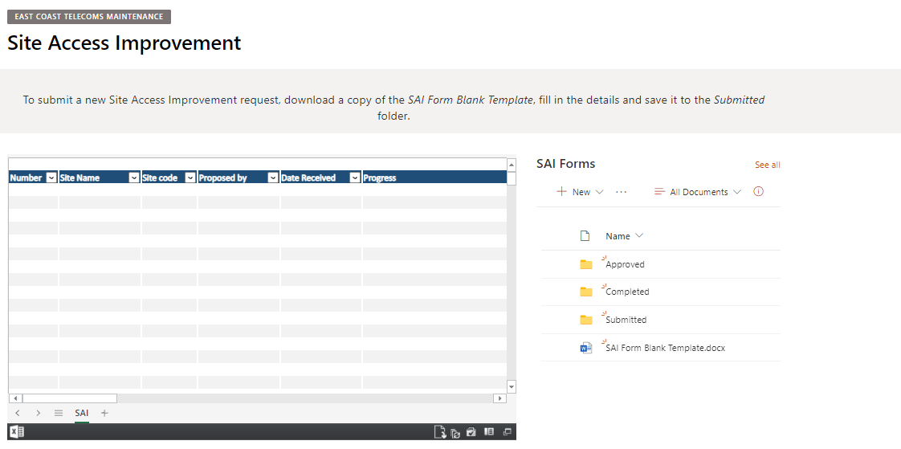
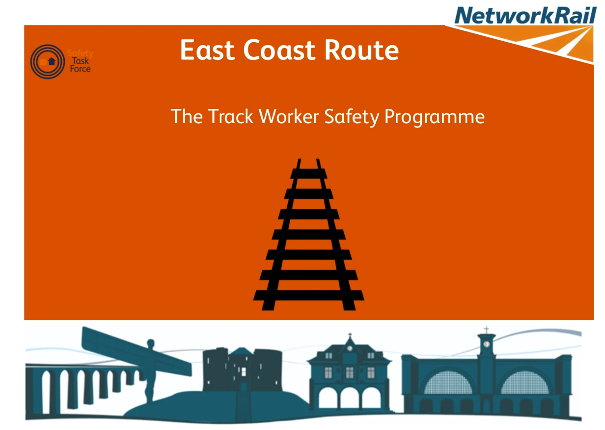
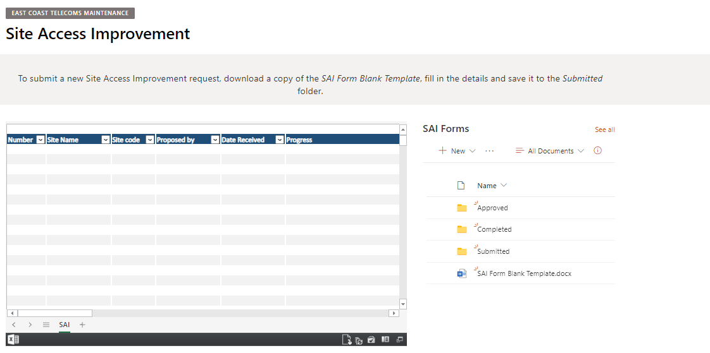
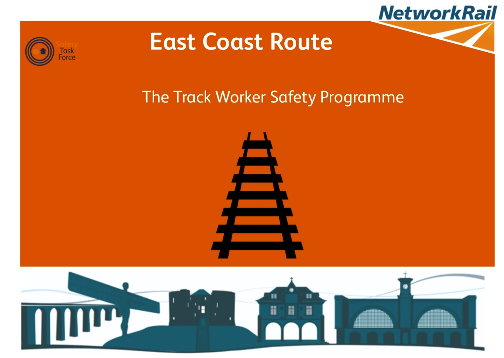

Project 03
Safety Related Faulting System
Transforming safety-critical failure management
The Challenge
Three-year backlog of safety-related failures with no standardized process for tracking, managing, or learning from incidents. New team members had no formal training framework.
The Solution
Redesigned the entire workflow, creating clear accountability chains and resolution processes aligned with ISO 45001 requirements. Developed comprehensive training materials that became the standard onboarding framework.
3 Years
Backlog Cleared
100%
Compliance Achieved

 


